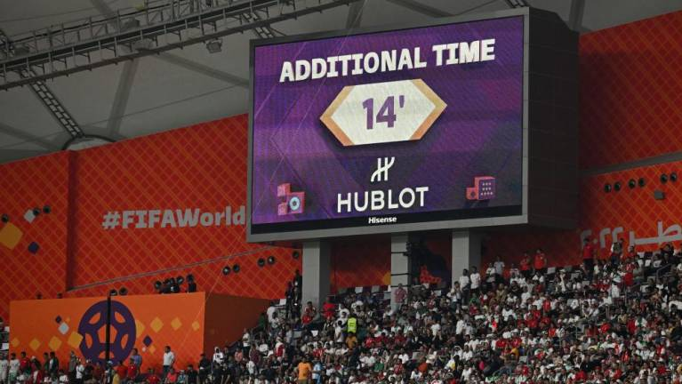

Tiempo añadido
En el caso del fútbol, el Reglamento del International Board, cuya versión en español lo denomina oficialmente tiempo suplementario,1 establece que el mismo debe durar no más de dos tiempos de 15 min c/u, con lo que el tiempo total de juego se lleva a 120 min. Gana el equipo que en esos 30 min. agregados haya logrado quebrar el empate, por lo que, durante la prórroga puede anotarse más de un gol. También se pueden añadir minutos extras a ambos tiempos suplementarios cuando están por finalizar. En caso de que no se rompa el empate, se recurre al procedimiento de tiros desde el punto penal; el cual consiste en una ronda de 5 penales por equipo, y si en caso ambos equipos ya patearon sus 5 penales c/u y siguen empatados, la serie continuará a con rondas de 1 (muerte súbita) hasta dar con el último lanzador, y si en caso ya patearon todos y el juego sigue igualado, la llave continuará nuevamente con el primer pateador, hasta dar con el vencedor.
La primera vez que este método se utilizó fue en la final del Campeonato Sudamericano 1919 entre Brasil y Uruguay. Ambas selecciones llegaron a la última fecha en el primer lugar con la misma cantidad de puntos y al enfrentarse terminaron empatados, con lo cual quedaron igualados en el primer lugar con la misma cantidad de puntos y debieron jugar un partido extra. Ese partido finalizó empatado a cero, por lo que se decidió que se jugaran dos tiempos suplementarios de 30 min. c/u, con lo que en total se jugaron 150 min., siendo hasta la fecha el partido —en general— más largo de la historia. Al finalizar el primer tiempo suplementario el partido seguía empatado a cero, y el gol del triunfo llegó recién a los 122 min. de juego (2 min. del segundo tiempo suplementario, anotado por Arthur Friedenreich). Cabe recordar que, por aquella época, el tiempo suplementario aún no había sido establecido de manera oficial por la FIFA, y también era norma generalizada que si la final de un torneo terminaba igualada, se jugase un segundo partido para definir al campeón y, de persistir el empate, se seguirían jugando más partidos hasta dar con el vencedor; pero, como el reglamento de la Conmebol lo exigía, el campeón del torneo sería el que obtuviera más puntos, y en caso de que dos selecciones terminaran igualadas en el primer lugar con la misma cantidad de puntos (no se tomaba en cuenta la diferencia de goles), debían definir al campeón en un único enfrentamiento. Por ese motivo se jugaron los dos tiempos suplementarios, y no otro partido definitorio.
